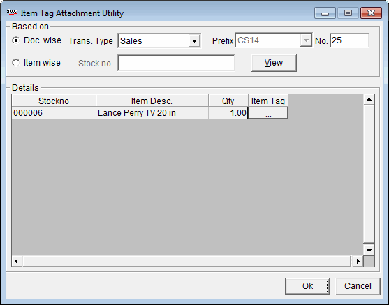

This option is used to apply serial number and other enabled item tag attributes to the stock items.
How to reach: Housekeeping > Item Tag Attachment Utility
The Item Tag Attachment Utility window is displayed.

Based on: Select transactions to be tagged based on either Doc. wise or Item wise.
Doc. wise: Select the transaction type for tagging.
The transaction types available are Sales, Sales Return, Purchase, Purchase Return, Transfer In, Transfer Out, Misc. Issue, Misc. Receipt, Discrepancy Update, Opening Stock or All
Prefix: The prefix is displayed automatically on selecting the transaction type.
No.: Enter the document number, for e.g. in a sales transaction, it is the bill number.
Item Tag: Click ... to display the Item Tag Information window.
Item wise: Select to tag the stock numbers in a document.